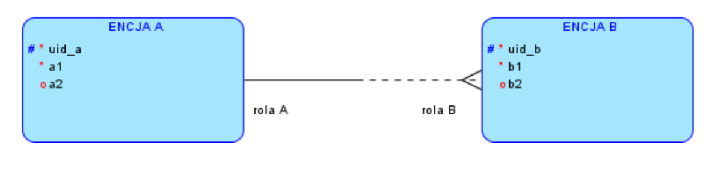

Jeśli strona była dla Ciebie pomocna, możesz wesprzeć mnie w jej utrzymaniu na buycoffee.to/mgarbowski
Wprowadzenie
Model pojęciowy (E-R)
Entity-relationship - model związków encji
- Encja
- Atrybut
- Związek
- Unikatowy identyfikator
Model relacyjny
- Relacja (tabela)
- podzbiór iloczynu kartezjańskiego dziedzin atrybutów
- zbiór danych umieszczonych w tabeli
- schemat relacyjny- struktura tabeli
- Atrybut (kolumna)
- Krotka (wiersz)
- Kucz obcy
- Klucz główny
Nie mylić realtion z relathionship
Założenia przy projektowaniu
- Celem jest zbudowanie modelu bazy danych
- opisuje jakiś wycinek świata
- opiera się na przeprowadzonej analizie
- Model bazy danych jest statyczny
- model tworzy się raz i aplikacje korzystają z niego przez długi czas
- Aplikacje są oparte na statycznym modelu danych
- Model musi być elastyczny, żeby odzwierciedlać zmiany w świecie
rzeczywistym
- w praktyce model może ulec zmianie w trakcie życia systemu
- bardzo często tak się dzieje
- chodzi o to żeby stworzone statyczne struktury mogły spełniać dynamicznie rozwijające się wymagania
Założenia dotyczą baz relacyjnych. W sytuacjach gdzie model jest bardzo zmienny albo w ogóle nieznany, dopoki dane nie zostaną dostarczone, stosuje się rozwiązania NoSQL.
Encja
- Odpowiednik pojęcia, terminu
- Grupuje obiekty o zbliżonej strukturze informacyjnej
- dla jednych obiektów mozemy znać jakieś cechy, a dla innych nie znamy / nie są określone / nie ma ich
- np. encja pojazd może opisywać i samochody i pociągi, nie wszystkie atrybuty stosują się do obu z nich
- Cechy opisuje się atrybutami encji
- Pozwala jednoznacznie określić przynależność obiektu do danej encji
- mając obiekt i dobrze określoną encję możemy określić czy ten obiekt należy do encji czy nie (daje się opisać pojęciem albo nie)
- Dla poprawności modelu ER (i później modelu relacyjnego) potrzebna
jest możliwość odróżniania od siebie obiektów w ramach enjcji
- trzeba z góry wiedzieć czym różnią się między sobą
- obiekt musi różnić się od innych zestawem cech
- musimy mieć możliwość efektywnego korzystania z tych cech
- bez tej własność encja nie nadaje się do poprawnego modelu
- unikatowy identyfikator
- Musi przynajmniej jedną cechę (atrybut)
- Można stosować różną granulację pojęć
- pojazd vs lądowy/wodny/powietrzny
- pojazd lądowy vs samochód/szynowy/jednoślad
- co lepsze? to zależy
- np. zależy czy bardziej nas interesują podobieństwa czy różnice
- perspektywa, punkt widzenia określa potrzeby względem modelu danych
- nie ma generycznego modelu rzeczywistości (są dla niektórych dziedzin np. ubezpieczenia)
- model zawsze tworzy się w jakimś kontekście (baza danych do wykorzystania przez system informatyczny)
- Można równocześnie używać różnych poziomów encji w jednym modelu (podtypy)
Rodzaje pojęć opisywanych przez encje
- Przedmioty fizyczne
- Przedmioty niefizyczne
- Przedmioty fikcyjne
- Relacja (ontologiczna)
- zapis na kurs
- leasing pojazdu
- Czas
- rzadko w praktyce traktuje się czas jako encję, częściej jako atrybut
- w kalendarzu, terminarzu
- Proces
- obieg dokumentu
- sprawa w urzędzie
Notacja Barkera
- Nazwa encji - rzeczownik w liczbie pojedynczej
- Encja - prostokąt
- Atrybuty
*- atrybut obowiązkowy- kółko - atrybut opcjonalny
#- unikatowy identyfikator
- Arność
- ile związek ma końców
- w tej notacji tylko binarne
- związek o większej arności można zastąpić oddzielną encją
- w modelu relacyjnym to i tak musi być oddzielna tabela
- Krotność
- ile obiektów encji wchodzi w związek po danej stronie
- jeden do wielu, jeden do jednego, itd.
- krotność jest różna w zależności od którego końca się patrzy
- Krotność minimalna - ile obiektów z drugiej encji minimalnie wchodzi
w dany związek
- 0 - wychodząca linia przerywana - związek opcjonalny
- 1 - wychodząca linia ciągła - związek obligatoryjny
- krotność maksymalna
- przeciwny koniec linii
- rozgałęziony - wiele
- pojedynczy - jeden
- Rola związku w semantyce modelu
- etykieta przy linii
- musimy wiedzieć co oznacza dany związek
- Używana w Oracle Datamodeler

Każdy encja A (może|musi) rola A (dokładnie 1 | wiele) encja B Każdy encja B (może|musi) rola B (dokładnie 1 | wiele) encja A